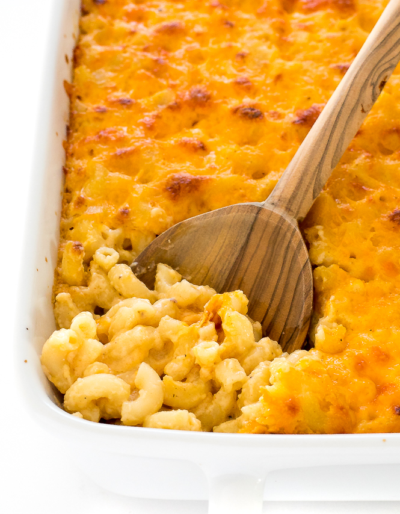

Baked Mac and Cheese

Tasty baked mac like grammy made, yo
This shit will blow yer balls off
Ingredients
- One pound of preferred pasta (elbow works best)
- 1/2 cup of butter
- 1/2 cup of flour
- 1 1/2 cup of milk
- Velveeta cheese
- Shredded cheddar
- Any additional cheese you may like (seriously, it doesn't matter; just don't go overboard with the cheeses)
- First, cook the pasta so it's ready
- Once the pasta is done, melt your butter in a sauce pan
- When your butter is melted, add the milk and flour to the pot. Stir the mixture and don't stop until it becomes creamy
- After you've mixed your sauce, dump your pasta into a lasanga dish and evenly pour the sauce through the pasta
- Add your desired cheeses and place it in the oven at 350°F
Tip: You could also try adding the pasta in "layers" and add your sauce and cheese between the layers (sort of like lasanga)